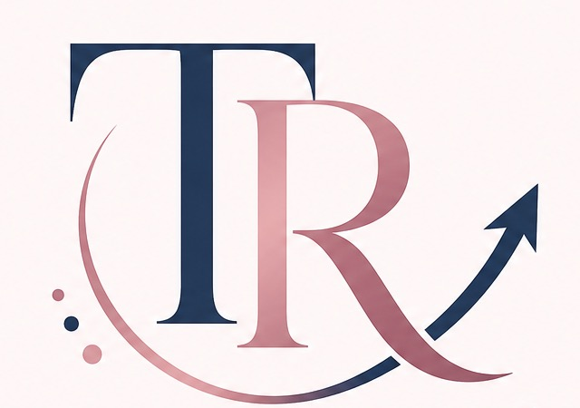
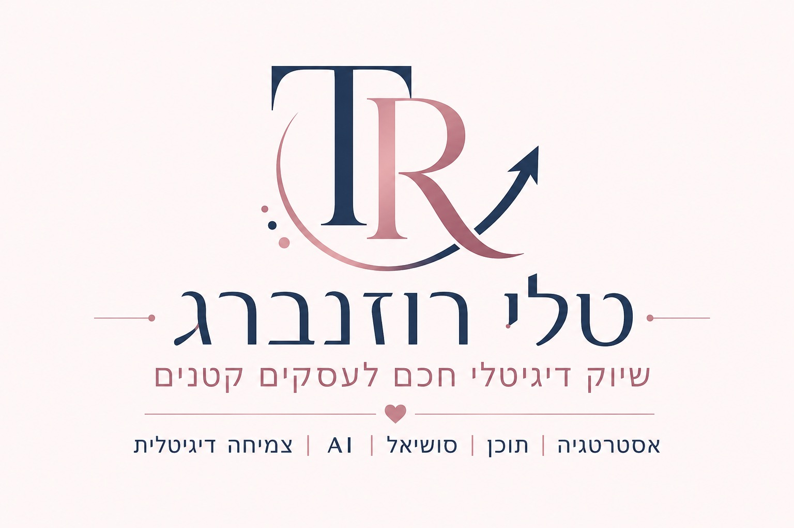

אבחון בהירות שיווקית
ממצב מצוי למצב רצוי: נבין איפה השיווק מתפזר, מה חסר כרגע ומה נכון לעשות קודם.

טלי רוזנברג
עסק קטן צריך שיווק חכם!
שיווק שמבין שלכל שקל יש משמעות, שכל שעה יקרה, ושכל החלטה צריכה לייצר ערך. לא רק עוד רעש ברשת.
אני עוזרת לבעלות עסקים קטנים לבנות מערך שיווק דיגיטלי חכם, חסכוני ומדויק, שמשלב אסטרטגיה, תוכן, סושיאל וכלי AI. המטרה היא להשיג יותר, גם כשיש פחות זמן, תקציב ואנרגיה.
אסטרטגיה, תוכן, סושיאל, AI, דפי נחיתה ונכסים דיגיטליים לעסק קטן שרוצה לצמוח חכם.
לקביעת שיחת היכרות בוואטסאפממצב מצוי למצב רצוי: נבין איפה השיווק מתפזר, מה חסר כרגע ומה נכון לעשות קודם.
נדייק את המסרים של המותג, הבידול, קהל היעד וכיוון תוכן חכם ואפקטיבי.
הקמת דפי נחיתה, כרטיס חכם ותשתיות דיגיטליות שמסבירות את הערך ומובילות לפנייה.
ליווי וכלים פרקטיים שיעזרו לך להבין מה נכון לעשות בעצמך ומה כדאי להשאיר לאשת מקצוע.
תוכן ויזואלי שמדבר את השפה של העסק, נראה מקצועי ומחזק נוכחות ברשת.
הקמת קמפיינים, משפכים ונכסים דיגיטליים שמחברים בין תוכן, תנועה ופניות.
שיווק חכם לא נשען רק על פוסטים. הוא בנוי ממערך של נכסים ותשתיות שעובדים יחד: דפי נחיתה, כרטיס ביקור חכם, נוכחות ברשתות חברתיות, קבוצת וואטסאפ, קמפיינים ומשפכים שיווקיים. המטרה היא ליצור מסלול ברור שמוביל את הלקוחה להבין, להתחבר ולפנות.
שיווק חכם מתחיל בשותפות חכמה.
אני בונה את האסטרטגיה, מגדירה את הדרך ומקימה את מערך השיווק.
יחד אנחנו מחליטות אילו משימות נכון שתבצעי בעצמך, ואילו נכון להשאיר בידיים שלי.
באמצעות מערכת עבודה משותפת ותהליך ליווי מסודר, אנחנו מנהלות את הפעילות בצורה פשוטה, חסכונית ויעילה.
כך את נהנית ממערך שעובד כמו מחלקת שיווק של עסק גדול, בעלויות שמתאימות לעסק קטן.
בודקות מה קורה היום בשיווק, מה עובד, מה פחות, ומה נכון לבנות קודם.
מגדירות אסטרטגיה, תוכן, נכסים דיגיטליים ותהליכי עבודה שמתאימים לעסק.
מחליטות מה את עושה בעצמך, מה אני עושה עבורך, ואיך מנהלות את השיווק בצורה יעילה לאורך זמן.
לבעלות עסקים קטנים שמרגישות שיש הרבה רעיונות, פוסטים, כלים ומשימות, אבל אין תוכנית ברורה שמחברת הכול.
זה מתאים למי שרוצה להפסיק לנחש מה לפרסם, איפה להשקיע זמן, ואיך להפוך את השיווק לדיגיטלי, מדויק ועקבי יותר.
ובעיקר למי שרוצה לצמוח, ועדיין להשאיר לעצמה זמן לעשות את העבודה המקצועית שלה, לא רק להתעסק בשיווק.
אני לא בונה לך עוד רשימת משימות. אני בונה איתך מערכת שיווקית שאפשר להבין, לנהל ולהתמיד בה.
אני מבינה מה המשמעות של תקציב מוגבל, זמן יקר והמון כובעים. לכן כל פעולה שיווקית צריכה להיות מדויקת, ישימה ובעלת ערך.
אני מלמדת אותך לעשות בעצמך את מה שנכון ומשתלם, ומתמקדת במה שמצריך ידע מקצועי, חשיבה אסטרטגית וביצוע מורכב.
באמצעות אסטרטגיה, תוכן, סושיאל וכלי AI, אני עוזרת לך להפיק יותר מכל משאב: זמן, תקציב ואנרגיה.
בשיחת היכרות קצרה נבדוק איפה השיווק שלך עומד היום, מה הכי נכון לקדם עכשיו, ואיך אפשר לבנות מהלך שיווקי חכם שמתאים לעסק שלך.
בואי נישאר בקשר גם ברשתות
רוצה לקבל רעיונות, השראה וכלים לשיווק חכם לעסק קטן?
אפשר לעקוב אחריי ולקבל הצצה לדרך שבה שיווק יכול להיות פשוט, ברור ואפקטיבי יותר.
לעקוב ולקבל השראה לשיווק חכם